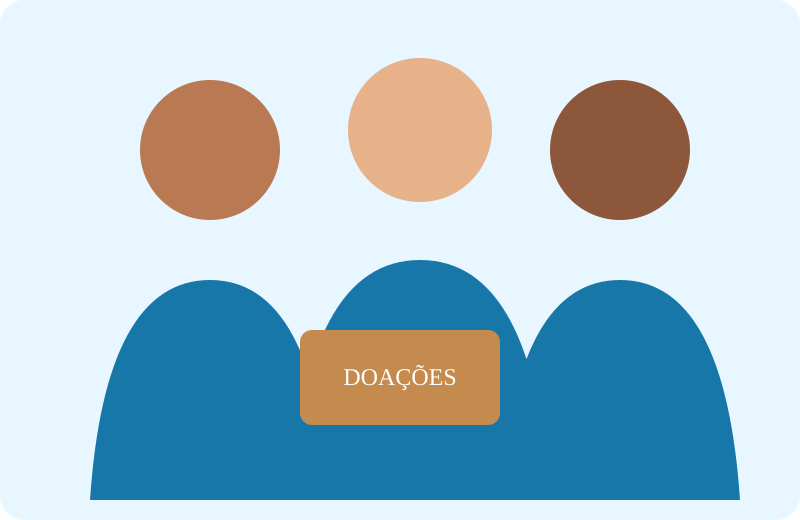

Doações
Contribua para a manutenção das campanhas e para a compra de materiais essenciais.
Ação que transforma
A ONG Esperança atua com inclusão social, apoio comunitário e oportunidades de voluntariado para fortalecer pessoas e comunidades.

Somos uma organização sem fins lucrativos dedicada a ampliar o acesso a oportunidades, promover a solidariedade e conectar pessoas dispostas a ajudar com iniciativas que geram impacto local.
Contribua para a manutenção das campanhas e para a compra de materiais essenciais.
Compartilhe seu tempo, conhecimento e habilidades em nossas iniciativas.
Ajude a ampliar o alcance da ONG compartilhando nossos projetos com sua comunidade.